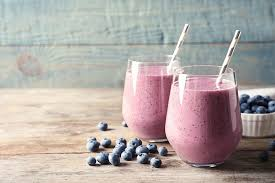

Getting enough protein in your diet is essential to growing muscles. This sweet protein smoothie is high in protein and low in calories. This delicious drink will have you reaching your protein goals in no time! Let's look at what will need to complete our drink.